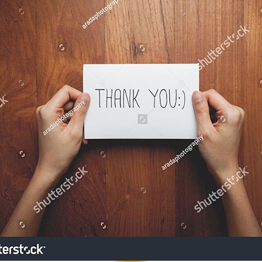

<!DOCTYPE html><html lang="ru"><head><meta charset="utf-8"><title>Simple Title</title><body class="middle"><div class="page_wrapper"><header class="header"><nav class="wrapper container"><a class="logo" href="index.html"><picture></picture></a><div class="menu_btn"><button class="page_button" type="button"><span>Показать активности</span></button></div><ul class="navigation container"><li><a href="index.html">Главная</a></li><li><a href="timer.html">Тёплый <br>таймер</a></li><li><a href="recipes.html">Рецепты <br>теплоты</a></li><li><a href="photo.html">Тёплые <br>фотографии</a></li><li><a href="kids_vocabulary.html">Детский <br>словарь</a></li><li><a href="wallpaper.html">Теплые <br>заставки</a></li><li><a href="thanx.html">100&nbsp;способов <br>сказать&nbsp;"Спасибо"</a></li><li><a href="video.html">Видео-<br>благодарности</a></li><li><a href="card.html">Электронная <br>открытка</a></li><li><a href="online.html">Online-<br>предсказания</a></li></ul></nav></header><div class="page_title"><h1 class="title">Weeks of warmth</h1><p class="subtutle">Недели теплоты</p></div><div class="container"><section class="page_content page_content--text"><div class="wrapper"><picture class="big right"></picture><h2 class="title">100 способов сказать "Спасибо"></h2><p>Как часто вы благодарите окружающих? Уверены, что каждый день!<br>Но сегодня мы подготовили для вас небольшой сюрприз — 100 способов, как сказать «Спасибо!» близким людям. Выбирайте любой понравившийся, а еще лучше — сразу все!</p><ol><li>Улыбнитесь и сохраняйте зрительный контакт.</li><li>Оставьте приятную благодарственную записку.</li><li>Угостите шоколадом.</li><li>Скажите «Спасибо!» с помощью языка жестов.</li><li>Пришлите СМС с позитивными эмодзи.</li><li>Наклейте стикер с добрыми словами на рабочееместо.</li><li>Скажите «Спасибо!» в присутствии других.</li><li>Пригласите в кафе.</li><li>Купите звезду в подарок.</li><li>Сделайте яркую открытку своими руками.</li><li>Сделайте реверанс.</li><li>Отправьте презент курьерской почтой.</li><li>Нарисуйте граффити на асфальте.</li><li>Позвоните с неизвестного номера и скажите комплимент.</li><li>Запишите благодарственное видео.</li><li>Доставьте букет цветов.</li><li>Сделайте принт  с благодарностью на футболке.</li><li>Спойте песню.</li><li>Пришлите письмо в бутылке.</li><li>Скажите «Спасибо!» на иностранном языке.</li><li>Расскажите, за что вы цените человека</li><li>Подарите подарок без повода.</li><li>Уступите место в автобусе.</li><li>Улыбнитесь.</li><li>Напишите «Спасибо!» на песке пляжа и сделайте фото.</li><li>Принесите чашку горячего кофе.</li><li>Приносите кофе весь день.</li><li>Пригласите в кино.</li><li>Назовите причину благодарности.</li><li>Подарите сертификат на впечатление.</li><li>Угостите всех пиццей.</li><li>Подарите подарок ВКонтакте.</li><li>Подарите полезную книгу с персональной подписью.</li><li>Позвоните утром и пожелайте хорошего дня.</li><li>Помогите по хозяйству.</li><li>Сделайте сюрприз.</li><li>Поблагодарите через любимую радиостанцию.</li><li>Замените «Спасибо!» на «Благодарю!».</li><li>Просто обнимите.</li><li>Напишите помадой на зеркале.</li><li>Неожиданно переведите деньги на банковскую карту.</li><li>Создайте благодарственный плакат своими руками.</li><li>Подарите то, о чем человек долго мечтал.</li><li>Пригласите в гости.</li><li>Выразите признательность в стихах.</li><li>Напишите благодарственный пост в Facebook.разные поступки.</li><li>Спросите, чем можете помочь в ответ.</li><li>Пригласите на чай.</li><li>Научите человека чему-то новому.</li><li>Отправьтесь на прогулку вместе.</li><li>Сервируйте стол для красивого завтрака.</li><li>Дайте волю эмоциям.</li><li>Создайте магнит с вашей фотографией на холодильнике.</li><li>Оставьте письмо в конверте на лобовом стекле автомобиля.</li><li>Подарите бутылку любимого вина.</li><li>Создайте календарь с вашими лучшими фотографиями.</li><li>Пригласите на спортивное мероприятие.</li><li>Пришлите несколько милых подбадривающих СМС в течение дня.</li><li>Подарите воздушный шар с сюрпризом.</li><li>Оставьте печенье с предсказаниями.</li><li>Испеките сладкие вафли.</li><li>Создайте баночку-сюрприз – со «Спасибо!»за разные поступки.</li><li>Сделайте фотоколлаж.</li><li>Подарите уютный плед.</li><li>Сделайте комплимент.</li><li>Скажите «Я очень ценю это!».</li><li>Создайте свою доску почета.</li><li>Подарите профессиональную фотосессию.</li><li>Закажите доставку фруктов зимой или мороженого летом.</li><li>Поставьте «лайк» в социальной сети.</li><li>Помогите расслабиться – подарите сеанс массажа.</li><li>Создайте плейлист с музыкой, которая напоминает вам друг о друге.</li><li>Выслушайте близкого человека.</li><li>Пригласите на танец.</li><li>Придумайте песню о человеке.</li><li>Попросите «звезду» поблагодарить человека в своей социальной сети.</li><li>Подарите подарок ребенку человека.</li><li>Свяжите необычный шарф.</li><li>Создайте список всего, что сделал для вас человек.</li><li>Снимите небольшой фильм.</li><li>Сделайте татуировку с именем человека.</li><li>Назовите кота в честь человека.</li><li>Закажите песню на радио.</li><li>Сходите вместе в зоопарк.</li><li>Погладьте по голове.</li><li>Оставьте несколько конфет в неожиданных местах.</li><li>Подарите живой цветок.</li><li>Наполните ванну шампанским.</li><li>Приготовьте вкусный чай.</li><li>Устройте вечеринку в честь человека.</li><li>Напишите благодарственное письмо.</li><li>Продемонстрируйте  свое внимание.</li><li>Закажите билборд с благодарностью.</li><li>Купите шапку и варежки.</li><li>Носите человека на руках.</li><li>«Поморгайте» аварийкой.</li><li>Дайте «пять!».</li><li>Помойте посуду.</li><li>Привезите сувенир из путешествия.</li><li>Поставьте памятник человеку.</li></ol><a class="page_button big" href="index.html">Вернуться на главную</a></div></section><aside class="smiles smiles--text"><div class="speech-bubble"><p>Предлагаем вам узнать, как можно получать больше теплоты</p></div><picture></picture><picture></picture><picture></picture></aside></div></div><script src="scripts/common.js"></script></body><meta name="description" content=""><meta name="viewport" content="width=device-width"><link rel="stylesheet" href="css/main.css"></head></html>